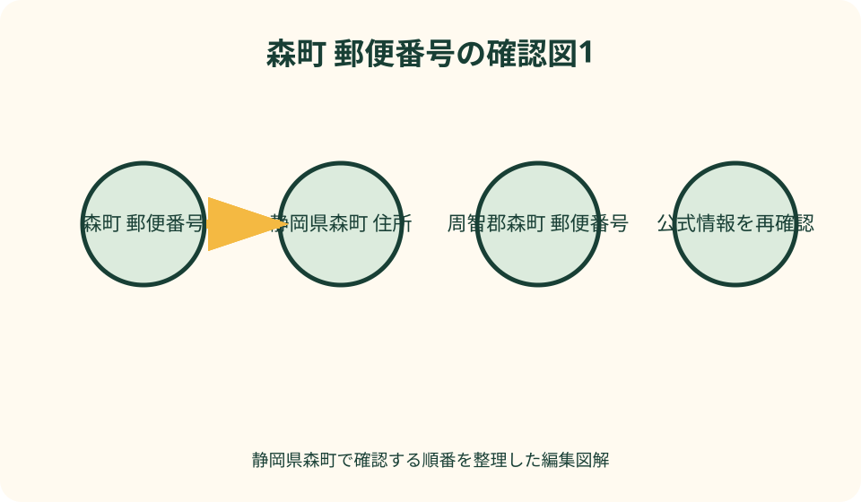
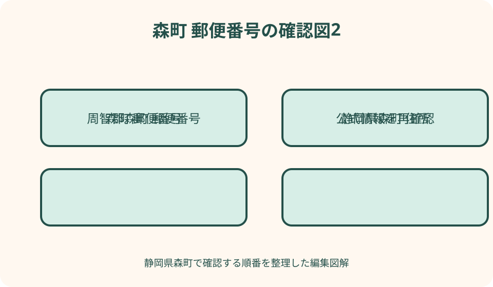

暮らし・手続｜最終確認 2026-08-10
静岡県周智郡森町の郵便番号・住所を正確に確認する方法
静岡県森町の住所は、必ず「静岡県周智郡森町」まで入力し、その後に町域名、番地、建物名・部屋番号を続けます。日本郵便公式では周智郡森町の町域別郵便番号が437-0201から437-0227の範囲などで掲載され、「以下に掲載がない場合」は437-0200です。ただし、この番号を町域が分からない住所の代用にせず、住民票、契約書、公共料金資料で正式な町域と番地を確認してください。「森町」だけでは北海道茅部郡森町と混同するため、都道府県と郡名を省略しないことが最重要です。
住所の骨格を固定する——静岡県・周智郡・森町から書く
静岡県森町の住所は、「静岡県」「周智郡」「森町」「町域」「番地」「建物名・部屋番号」の順に確認します。検索や配送画面で森町だけを入力せず、少なくとも静岡県周智郡森町までを一組にします。
郡名の「周智郡」は市名のような配送先ではなく、森町を特定する正式住所の一部です。読みは「しゅうちぐん」、森町は「もりまち」で、日本郵便公式のカナ表示と照合できます。
町域は森、飯田、三倉、谷中などで、その後に数字の番地が続きます。町内会名、地区名、通称を町域の代わりに入力すると、郵便番号検索や行政手続で一致しない場合があります。
本記事は二〇二六年八月十日に日本郵便と森町公式を確認した手順です。郵便番号や住所表記は変更される可能性があるため、古い年賀状より公式検索と現在の住民登録資料を優先します。
北海道の森町と分ける——都道府県と郡名を省略しない
日本には、静岡県周智郡森町のほか、北海道茅部郡森町があります。どちらも漢字では森町となるため、検索欄、通販、口頭連絡で「森町」だけを伝えると候補が混ざります。
静岡県側は郵便番号が四三七で始まる町域が掲載され、北海道側には〇四九で始まる郵便番号があります。番号だけでも違いを検知できますが、番号から都道府県を推測して補正しません。
入力候補に「森町」が二つ出た時は、静岡県、周智郡、町域の三点を照合します。北海道の茅部郡や砂原、本町等が表示されたら選択を戻し、最初から都道府県を指定します。
電話では「静岡県の森町」より「静岡県周智郡森町、町域は森」のように続けます。音声認識や配送担当へ伝える場合も、郡名と郵便番号を先に言うと取り違えを減らせます。
日本郵便公式で探す——都道府県から町域へ順に進む
日本郵便の郵便番号検索で都道府県から探し、静岡県、周智郡森町、町域の順に選びます。検索結果のパンくずが「静岡県 > 周智郡森町」になっているかを番号より先に見ます。
一覧は五十音別で、町域名の漢字、カナ、七桁番号を並べています。似た漢字を検索結果から推測せず、手元の住民票、契約書、運転免許証等の正式表記と一文字ずつ照合します。
郵便番号から逆引きする場合も、結果の都道府県、市区町村、町域を全て確認します。同じ七桁を手入力したつもりでも、一桁違いで別地域が表示されたら住所を自動補完しません。
日本郵便には事業所の個別郵便番号もあります。役場や会社の番号を家庭住所へ流用せず、個人宅は町域別番号、事業所宛は相手が指定した番号を使います。

町域と番号の関係を読む——四桁後半だけで推測しない
日本郵便公式では、森は四三七・〇二一五、飯田は四三七・〇二二二、三倉は四三七・〇二〇八、谷中は四三七・〇二二五と掲載されています。町域ごとに番号が異なります。
向天方は四三七・〇二一二、睦実は四三七・〇二一三、草ケ谷は四三七・〇二一四です。隣り合う番号でも地理的な近さや行政地区が必ず同じとは限りません。
「以下に掲載がない場合」の四三七・〇二〇〇は、町域名を調べなくてよい万能番号ではありません。正式な町域が一覧にある住所では、その町域固有の番号を使います。
一覧を暗記して入力するより、送付のたびに住所録の町域と日本郵便公式を照合します。番号が正しくても町域、番地、宛名が誤っていれば、確実な配送を保証できません。
難読町域を確認する——漢字とカナを対で保存する
森町には、睦実をムツミ、葛布をカツブ、問詰をトイヅメ、嵯塚をサヅカ、向天方をムカイアマガタと読む町域があります。読みを音だけで別の漢字へ変換しません。
天宮はアメノミヤ、円田はエンデン、草ケ谷はクサガヤ、谷中はヤナカと日本郵便が表示しています。入力システムの候補が別読みを示しても、公式カナを基準にします。
鍛冶島、亀久保、大鳥居、西俣、薄場等も、手書き文字の読み違いが起き得ます。電話で伝える際は漢字の説明だけでなく、郵便番号とカナを添えます。
住所録には、漢字住所、フリガナ、郵便番号を別欄で保存します。フリガナ欄へ番地や建物名まで無理に入れず、通販サイトの入力仕様に従って分けます。
地区・町内会と町域を分ける——六地区は郵便番号表ではない
森町公式の引越・新生活ページは、町内を三倉、天方、森、一宮、園田、飯田の六地区に分け、町内会ごとに自治会を運営すると説明しています。これは郵便番号の町域一覧とは役割が違います。
例えば園田地区には草ケ谷、円田、谷中、中川、牛飼等の町域や町内会が関係しますが、園田という地区名を全ての郵便住所へ書くわけではありません。正式住所を住民資料で確認します。
森地区の町内会には本町、新町、南町等の通称が含まれる資料がありますが、日本郵便の町域では森、天宮、向天方等が使われます。町内会名と町域の階層を入れ替えません。
自治会、回覧、避難所の連絡では町内会名が重要になる一方、通販や住民異動では正式住所が必要です。同じ家庭でも用途別に二つの名称を持つ場合があると整理します。

番地を確認する——ハイフン表示を原資料へ戻す
郵便番号検索は町域までを示し、個々の番地を決めるものではありません。番地は住民票、登記、賃貸借契約、自治体通知、公共料金請求等の現在の原資料で確認します。
ウェブ入力の「一二三四－五」は、書類上の「一二三四番地の五」等を短縮表示する場合があります。行政様式へ書く時は、その様式の例と公的資料の表記に合わせます。
数字の全角・半角、漢数字、ハイフンの種類はシステムが変換することがあります。変換後の確認画面で、数字が欠けた、桁がつながった、マイナス記号になった等を見直します。
土地の地番と住民票上の住所、建物の所在地表記が一致しない場合があります。不動産の権利書類、転居届、荷物送付のどれを作るかに応じ、担当へ使用する住所を確認します。
建物名・部屋番号を省かない——戸建てと集合住宅を分ける
集合住宅では番地だけで複数世帯へ届くため、契約書にある正式な建物名と部屋番号を続けます。入力欄が分かれている場合は、住所一欄へ町域・番地、住所二欄へ建物名・部屋番号を入れます。
建物名の英字、長音、棟番号、アルファベットは表札や契約書と照合します。似た建物名を地図候補から選ばず、管理会社が指定する配送表記を確認します。
戸建てでも敷地内に複数棟、二世帯、事業所併設がある場合は、宛名、屋号、棟名等を追加します。郵便番号が合うことを配達先の一意性と同一視しません。
表札を出さない家庭は、配送会社へ伝える目印に個人情報や危険な在宅情報を書きすぎません。必要なら置き配場所、呼出方法、連絡先を各サービスの安全な欄へ登録します。
転入・転居で確定する——実際に住み始めた後の届出を使う
森町公式は、町外からの転入届を引越し完了日から十四日以内に行うと案内しています。マイナポータルで転入予約ができても、転入届は来庁が必要との注意があります。
転入前は契約予定住所、転入後は住民登録住所を分けます。入居前に通販や学校へ知らせる場合は、鍵の受取日、郵便受箱の使用開始、住民異動日を混同しません。
町内転居も異動した日から十四日以内の届出が案内されています。郵便転送だけで住民票、学校、水道、医療証等の住所が一括更新されるわけではありません。
住民生活課で住所表記に疑問がある場合は、地図のスクリーンショットより契約書や転出証明書等を示して確認します。正式表記が確定したら家庭の住所台帳を一斉に更新します。
通販・宅配で入力する——自動補完後に都道府県を再確認
通販サイトで郵便番号を入れると、都道府県、市区町村、町域が自動入力されます。表示が「静岡県周智郡森町」になっているか、北海道や別市町村へ変換されていないかを確認します。
町域まで自動入力された後、番地と建物名は自分で入力します。番地を町域欄へ重複入力したり、建物名欄へ電話番号を混ぜたりせず、最終確認画面を一行で読み上げます。
贈り物では受取人へ、郵便番号、正式住所、建物名、宛名、電話番号の最新状態を確認します。過去年賀状の住所録を使う時は、転居や改姓がないか送付前に尋ねます。
誤配送防止のため地図ピンを追加できるサービスでも、ピンと文字住所が一致するかを見ます。位置情報だけを正しい住所の代用にせず、双方が違えば受取人へ確認します。
役所・金融・保険へ書く——本人確認資料と同じ表記にする
行政、金融、保険、学校等の手続では、本人確認書類や住民票の住所と申請書を一致させます。通称の町内会名、配送用の省略住所、古い建物名を混ぜません。
森町の転出届ページは、新住所についてアパート名・部屋番号も記載するよう案内しています。町外へ移る時も、転出先の郵便番号と正式住所を事前に確認します。
マイナンバーカード、在留カード、運転免許、車検、銀行、勤務先は更新窓口と期限が異なります。転居届を出しただけで全て更新されたと考えず、チェック表を作ります。
代理人が住民異動や証明請求をする場合は、委任状や本人確認が必要になることがあります。代理人へ住所を口頭だけで渡さず、公的資料と同じ文字列を安全に共有します。
事業所宛を確認する——個別郵便番号と所在地番号を分ける
森町役場等の大口事業所は、所在地の町域番号とは別の個別郵便番号を案内する場合があります。相手の公式ページや返信用封筒に指定番号があれば、その用途を確認します。
個別郵便番号は、その事業所宛の郵便を扱うための番号で、同じ番地の近隣住宅へ使う番号ではありません。会社住所を自宅住所録へコピーする時に番号だけ残さないようにします。
請求書、応募書類、行政申請を送る時は、部署名、係名、担当名、建物名、郵便番号を相手の最新案内どおりに書きます。町役場本庁と保健福祉センター等を混同しません。
返信用封筒に印字された住所とウェブが違う場合は、発行日と問い合わせ先を確認します。自己判断で一部だけ新しい住所へ直さず、提出先へ正しい宛先を尋ねます。
災害時に共有する——住所・現在地・避難先を三つに分ける
災害時の連絡では、自宅住所、今いる場所、向かう避難先を別々に伝えます。「森町にいる」だけでは範囲が広く、同名自治体の混同もあるため、静岡県周智郡と町域を付けます。
森町の指定避難所一覧は施設名と所在地を掲載していますが、災害時に全施設が同時開設されるとは限りません。町の開設情報を確認し、住所だけで避難先を決めません。
一一九や一一〇へは、町域・番地、近くの交差点や公共施設、目立つ危険、連絡者名を落ち着いて伝えます。郵便番号だけでは現場を特定できないため、住所と現在地を使います。
家族の連絡カードには漢字住所、フリガナ、郵便番号、避難先候補、緊急連絡を載せます。公開SNSへ自宅の番地や留守情報を投稿せず、必要な相手へ限定して共有します。
ハザードマップへ住所を入れる——郵便番号検索と役割を分ける
郵便番号検索は配送用の町域を確認するもので、土砂災害や洪水の危険を判定する地図ではありません。森町のハザードマップで番地周辺を別に確認します。
地図検索で住所が中心点や町域代表点に置かれる場合は、建物位置と一致するか拡大します。位置がずれた時は、別地図、航空写真、現地確認を組み合わせます。
旧学校名や町内会名が避難所一覧に残る場合も、郵便住所の町域とは別に読みます。施設名称、所在地、災害種別、開設状況を一組として確認します。
高齢者や子どもが住所を伝える練習では、難読町域のカナと近くの公共施設を使います。番地を暗記できない場合は、安全に携帯できる連絡カードを家庭で用意します。
誤入力に気付いた時——発送前・輸送中・返送後で分ける
注文確定前なら、郵便番号、都道府県、郡町、町域、番地、建物名、宛名を一行ずつ修正します。郵便番号だけ直して自動入力された北海道住所を残さないよう確認します。
発送前なら販売者や差出人へ注文番号と正しい住所を連絡します。変更受付の可否はサービスごとに異なるため、同じ注文を重複して出し直す前に案内を待ちます。
輸送中は、配送事業者の正規窓口から追跡番号と本人確認を用いて相談します。配達員の個人連絡先を探したり、第三者が住む誤住所へ直接訪ねたりしません。
返送後は、どの欄が誤ったかを記録し、住所録、自動入力、決済情報を修正します。今回届いたから同じ誤表記でも大丈夫とは考えず、次回前に公式検索へ戻ります。
住所データを保守する——家族の基準文字列を一つ持つ
家庭で基準となる住所文字列を一つ作り、郵便番号、漢字、カナ、番地、建物名、部屋番号に分けて保存します。住民票等を確認した日も添えます。
スマートフォン、通販、銀行、学校、勤務先の住所録へ一斉にコピーする前に、個人情報の保存先と共有範囲を確認します。家族共用メモを公開リンクにしません。
転居時は旧住所を削除するのではなく、利用停止日と郵便転送期間を記録します。返品、保証、税、学校等で旧住所が必要になった時に、現住所と混ぜず参照できます。
年一回、日本郵便の番号と森町公式の住所関連ページを確認し、サービス側の自動補完も更新します。特に事業所や建物の名称変更は相手公式で確認します。
良い点——公式情報を用途別に組み合わせられる
森町の住所確認で良い点は、日本郵便が町域別の漢字、カナ、七桁番号を一括掲載し、森町が転入・転居・転出の届出と連絡先を公開していることです。
日本郵便の一覧は、難読町域を正しいカナへ結び付ける基準になります。森町公式の六地区説明を合わせれば、郵便町域と自治会地区を別物として整理できます。
転出届の案内は新住所にアパート名・部屋番号を求めており、番地だけでは足りない場面を具体的に確認できます。通販にも同じ注意を応用できます。
防災情報には避難所の所在地があり、平時の配送住所と緊急時の現在地共有を分けて準備できます。公式情報ごとの目的を守れば、一つの地図へ依存せずに済みます。
注文したい点——郵便番号一覧を住所帳の代わりにしない
注文したい点は、日本郵便一覧が町域と番号を示しても、個別の番地、建物名、部屋番号、住民登録まで証明するものではないことです。原資料との照合が必要です。
「以下に掲載がない場合」の四三七・〇二〇〇を、町域が不明な荷物の仮番号にしません。受取人へ正式な町域を確認できないなら、発送を保留します。
地図のピン、町内会名、観光施設の住所、口頭の通称を、行政手続の正式住所へ自動変換しません。利用目的に応じ、住民生活課や相手先へ確認します。
同名の北海道森町との混同は、郵便番号一桁の注意だけでは防げません。静岡県・周智郡・町域までを毎回読み上げ、確認画面で都道府県を見直します。
対案・結論——三資料と六欄で住所を確定する
結論として、住民票または契約書、日本郵便公式、森町公式手続ページの三資料を使います。郵便番号、都道府県、郡町、町域、番地、建物・部屋の六欄を埋めます。
通販では六欄を自動補完後に読み直し、役所では本人確認資料に合わせ、災害時は現在地と避難先を別に加えます。同じ住所でも用途ごとに必要情報を変えます。
誤りを見つけたら、発送前、輸送中、返送後の段階を確認し、正規窓口へ連絡します。住所録の元データも直し、一件だけの修正で終えません。
分からない町域や番地を推測して四三七・〇二〇〇へ置き換えず、住民生活課、管理会社、受取人へ確認します。未確認のまま送るより、確認日を一日取る方が安全です。
大石の視点——住所は一行の文字ではなく照合手順
大石の視点では、住所は一行を暗記するものではなく、都道府県、郡町、町域、番地、建物を順に照合する手順です。森町は同名自治体があるため、この順序が特に重要です。
難読町域は地元で読めても、音声入力や町外の人には伝わりにくいものです。郵便番号と公式カナを添えれば、漢字の知識だけに頼らず共有できます。
郵便番号が正しいことは、住所全体が正しいことを意味しません。自動入力の便利さを使いながら、番地と建物名は人が原資料へ戻って確認します。
転居、通販、役所、防災で必要な住所は少しずつ違います。家庭の基準文字列を一つ持ち、用途に応じて情報を足し引きすることが、誤配送と連絡遅れを減らします。
公式情報・確認先
掲載内容は次の一次情報を基礎に整理しました。営業、料金、催し、交通は変わるため、出発前または手続き前にリンク先で最新情報を確認してください。
- 日本郵便 静岡県周智郡森町の郵便番号一覧（www.post.japanpost.jp、2026-08-10確認）
- 日本郵便 北海道茅部郡森町の郵便番号（www.post.japanpost.jp、2026-08-10確認）
- 森町公式 転入届（静岡県森町、2026-08-10確認）
- 森町公式 転出届（静岡県森町、2026-08-10確認）
- 森町公式 引越・新生活と六地区（静岡県森町、2026-08-10確認）
- 森町公式 移住定住手続き（静岡県森町、2026-08-10確認）
- 森町公式 町指定避難所等（静岡県森町、2026-08-10確認）
- 森町公式 災害に備えて（静岡県森町、2026-08-10確認）